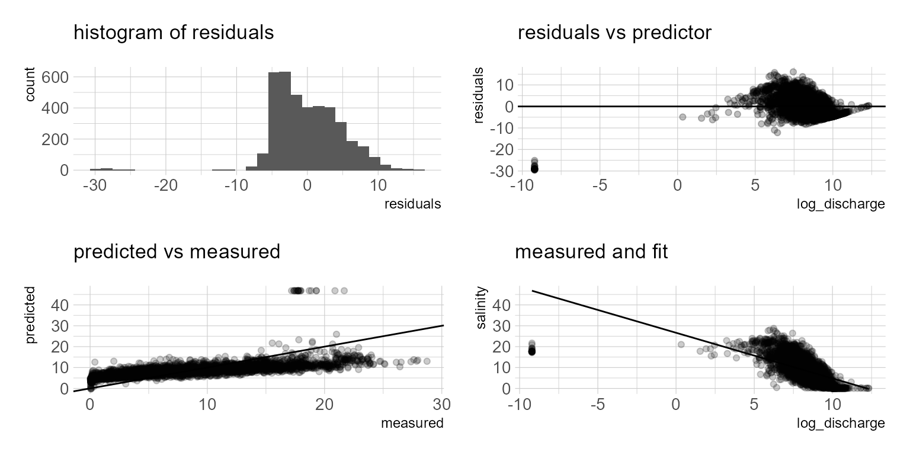
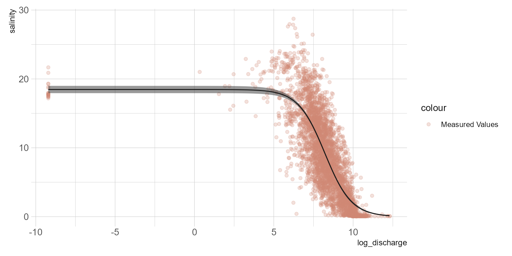

Part one of some statistical approaches for estimating estuarine salinity using freshwater inflow.
For some of my projects I need to predict daily mean salinity in tidal rivers/estuaries. There are process models that are capable of doing this at daily and sub-daily time steps but require a lot of information. I rely on simple statistical methods for identifying the relationship between freshwater inflow and salinity. This article will demonstrate nonlinear least squares. The data used in this example is from USGS and the Texas Water Development Board. The dataRetrieval is a must have package if you routinely retrieve USGS stream gage data. TWDB provides a robust web API for calling data they have collated in the Water Data for Texas dashboard. minpack.lm is used for fitting nonlinear least squares. I use the tidyverse set of packages for data wrangling and plotting.
library(dataRetrieval)
library(hrbrthemes)
library(tidyverse)
library(patchwork)
library(minpack.lm)
## downloads mean daily discharge stream gage data from USGS
flow <- readNWISdv(siteNumbers = "08041780",
parameterCd = "72137", # technically this is tidally filtered discharge
# 00060 is discharge
startDate = "2008-01-01",
endDate = "2020-07-31") %>%
dplyr::select(Date, X_72137_00003) %>%
dplyr::rename(date = Date,
discharge = X_72137_00003)
## downloads hourly salinity data from TWDB
## and summarizes it to mean daily salinity
salinity <- read_csv("https://waterdatafortexas.org/coastal/api/stations/SAB1/data/seawater_salinity?start_date=2008-01-01&end_date=2020-07-31&binning=hour&output_format=csv",
comment = "#",
col_types = list(col_datetime(),
col_number())) %>%
mutate(datetime = as.Date(datetime)) %>%
group_by(datetime) %>%
summarize(salinity = mean(value))
df <- left_join(flow, salinity, by = c("date" = "datetime")) %>%
dplyr::filter(!is.na(salinity))With the data downloaded, a quick visualization of the data below shows the expected relationship. Increased salinity with decreased freshwater inflow and possible long term trends in flow and salinity. The salinity-flow relationship appears to be a logistic function. This makes sense since, we know salinity (at least for most estuaries under normal conditions) will have a maximum value (typically around 36 psu) and a minimum value (maybe at or above zero).
## a little data exploration
p1 <- ggplot(df) +
geom_point(aes(date, log1p(discharge), color = "mean daily discharge (cfs)"), alpha = 0.25, shape = 16) +
geom_point(aes(date, salinity, color = "mean daily salinity (psu)"), alpha = 0.25, shape = 16) +
geom_smooth(aes(date, log1p(discharge), color = "mean daily discharge (cfs)"), method = "lm", se = FALSE) +
geom_smooth(aes(date, salinity, color = "mean daily salinity (psu)"), method = "lm", se = FALSE) +
scale_color_ipsum() +
theme_ipsum_pub() +
labs(y = "") +
theme(legend.position = "bottom")
p2 <- ggplot(df) +
geom_point(aes(log1p(discharge), salinity), alpha = 0.25, shape = 16) +
scale_color_ipsum() +
theme_ipsum_pub()
p1 + p2Figure 1: Flow and salinity scatterplots
Since we observe the logistic function in the streamflow salinity relationship, a linear regression probably isn’t the best choice. But let’s fit one anyways.
## Go ahead a transform the predictor variable
## I am also going to add a tiny amount to the single zero value
df <- df %>%
mutate(discharge = case_when(
discharge <= 0 ~ 0.0001,
discharge > 0 ~ discharge),
log_discharge = log(discharge))
m.lm <- lm(salinity ~ log_discharge,
data = df)
summary(m.lm)
Call:
lm(formula = salinity ~ log_discharge, data = df)
Residuals:
Min 1Q Median 3Q Max
-29.2695 -3.5998 -0.6124 3.2706 15.9988
Coefficients:
Estimate Std. Error t value Pr(>|t|)
(Intercept) 26.53666 0.36913 71.89 <2e-16 ***
log_discharge -2.16244 0.04396 -49.19 <2e-16 ***
---
Signif. codes: 0 '***' 0.001 '**' 0.01 '*' 0.05 '.' 0.1 ' ' 1
Residual standard error: 4.834 on 3630 degrees of freedom
Multiple R-squared: 0.4, Adjusted R-squared: 0.3998
F-statistic: 2420 on 1 and 3630 DF, p-value: < 2.2e-16The model summary indicates a fairly low adjusted r squared. I know I don’t want to use this model, but we can plot the model residuals and predictions to see where the issue is. Basically we observe over-predictions at low flows and potential under predictions at higher flows. We will move on to a nonlinear least square approach.
df_lm <- df %>%
mutate(residuals = resid(m.lm),
fits = predict(m.lm, type = "response"))
p1 <- ggplot(df_lm) +
geom_histogram(aes(residuals)) +
scale_fill_ipsum() +
theme_ipsum_pub() +
labs(subtitle = "histogram of residuals")
p2 <- ggplot(df_lm) +
geom_point(aes(log_discharge, residuals), alpha = 0.25) +
geom_hline(yintercept = 0) +
scale_color_ipsum() +
theme_ipsum_pub() +
labs(subtitle = "residuals vs predictor")
p3 <- ggplot(df_lm) +
geom_point(aes(salinity, fits), alpha = 0.2) +
geom_abline(slope = 1) +
labs(x = "measured", y = "predicted",
subtitle = "predicted vs measured") +
scale_color_ipsum() +
theme_ipsum_pub()
p4 <- ggplot(df_lm) +
geom_point(aes(log_discharge, salinity), alpha = 0.2) +
geom_line(aes(log_discharge, fits)) +
scale_color_ipsum() +
theme_ipsum_pub() +
labs(subtitle = "measured and fit")
(p1 + p2) / (p3 + p4)
A clear sigmoid curve or logistic function is evident in figure… The logistic function is defined by the formula:
\[ f(x) = \frac{L}{1 + e^{-k(x-x_0)}} \]
where \(L\) = the maximum value of the curve, \(x_0\) = the midpoint of the curve, and \(k\) is the logistic growth rate. Nonlinear least squares can be used to parameterize the model. The starting values in the list are eyeballed from figure. Instead of nls, I am using the propagate package and the predictNLS function to also obtain the 95% confidence intervals.
f_S <- formula(salinity ~ L / (1 + exp(-k * (log_discharge - x_0))))
m.ls <- nls(f_S,
data = df,
start = list(L = 20, k = -3, x_0 = 2))
summary(m.ls)
Formula: salinity ~ L/(1 + exp(-k * (log_discharge - x_0)))
Parameters:
Estimate Std. Error t value Pr(>|t|)
L 18.37048 0.26981 68.09 <2e-16 ***
k -1.21351 0.03357 -36.15 <2e-16 ***
x_0 8.22846 0.03259 252.46 <2e-16 ***
---
Signif. codes: 0 '***' 0.001 '**' 0.01 '*' 0.05 '.' 0.1 ' ' 1
Residual standard error: 3.555 on 3629 degrees of freedom
Number of iterations to convergence: 8
Achieved convergence tolerance: 6.636e-06
df_ls <- propagate::predictNLS(model = m.ls,
newdata = data.frame(log_discharge = seq(min(df$log_discharge),max(df$log_discharge), by = .1)),
interval = "confidence", nsim = 10000, alpha = 0.05)
df_predict <- tibble(
log_discharge = seq(min(df$log_discharge),max(df$log_discharge), by = .1),
fit = df_ls$summary$Prop.Mean.1,
upr = df_ls$summary$`Prop.97.5%`,
lwr = df_ls$summary$`Prop.2.5%`)
ggplot() +
geom_point(data = df, aes(log_discharge, salinity, color = "Measured Values"), alpha = 0.25) +
geom_line(data = df_predict, aes(log_discharge, fit, color = "Least Squares Fit"), color = "black") +
geom_ribbon(data = df_predict, aes(x = log_discharge, ymin = lwr, ymax = upr), alpha = 0.5) +
scale_color_ipsum() +
theme_ipsum_pub()
The model summary provides the parameter estimates, \(f(x) = \frac{18.37}{1 + e^{--1.214(x-8.228)}}\) The plot generally appears to follow reality. However, when we look at the model residuals below, it is evident that as salinity approaches zero, the model over predicts. If you prefer a numeric model metric, hydroGOF provides a range of model metrics to choose from below. Additional model terms to account for covariates such as season or long term trends might result in a better model. In future posts I will look at fitting this data with beta regression and generalized additive models. The NLS approach is appealing because it provides a simple model with relatively good fit. However, if we want better predictive performance I suspect a multiple regression approach would offer some advantages.
hydroGOF::gof(df_ls$salinity, df_ls$fits)
[,1]
ME -0.07
MAE 2.73
MSE 12.63
RMSE 3.55
NRMSE % 71.00
PBIAS % -0.80
RSR 0.71
rSD 1.25
NSE 0.50
mNSE 0.37
rNSE 0.10
d 0.89
md 0.72
rd 0.81
cp -14.41
r 0.82
R2 0.68
bR2 0.68
KGE 0.70
VE 0.69If you see mistakes or want to suggest changes, please create an issue on the source repository.
Text and figures are licensed under Creative Commons Attribution CC BY 4.0. Source code is available at https://github.com/mps9506/mschramm, unless otherwise noted. The figures that have been reused from other sources don't fall under this license and can be recognized by a note in their caption: "Figure from ...".
For attribution, please cite this work as
Schramm (2020, Sept. 9). @mpschramm: Predicting estuarine salinity using simple statistical models part 1. Retrieved from https://michaelpaulschramm.com/posts/2020-08-24-salinity_functions/
BibTeX citation
@misc{schramm2020predicting,
author = {Schramm, Michael},
title = {@mpschramm: Predicting estuarine salinity using simple statistical models part 1},
url = {https://michaelpaulschramm.com/posts/2020-08-24-salinity_functions/},
year = {2020}
}